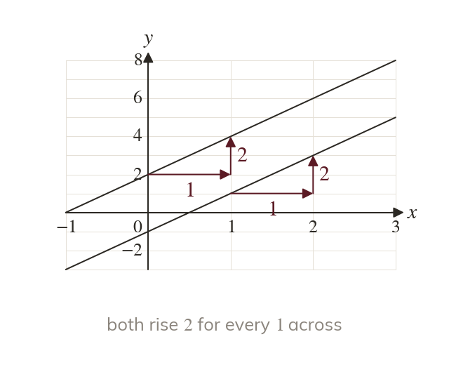
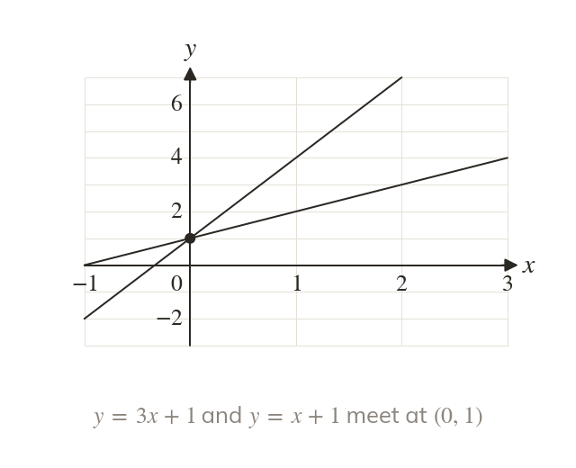
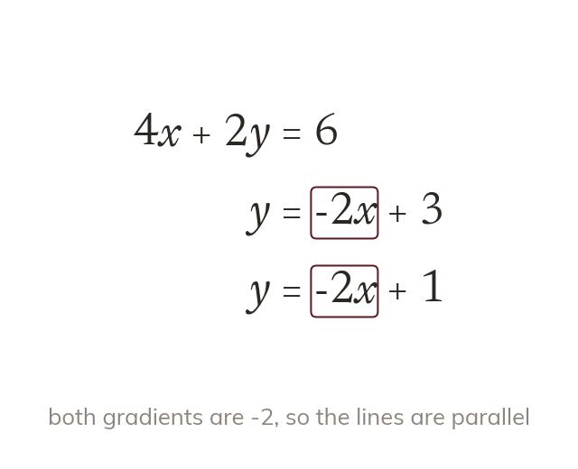
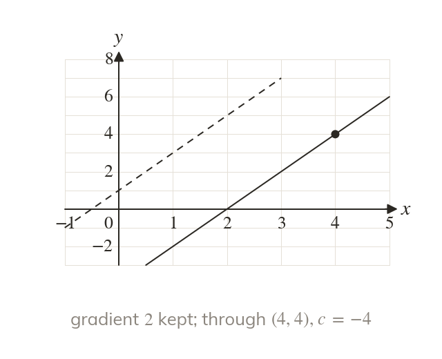
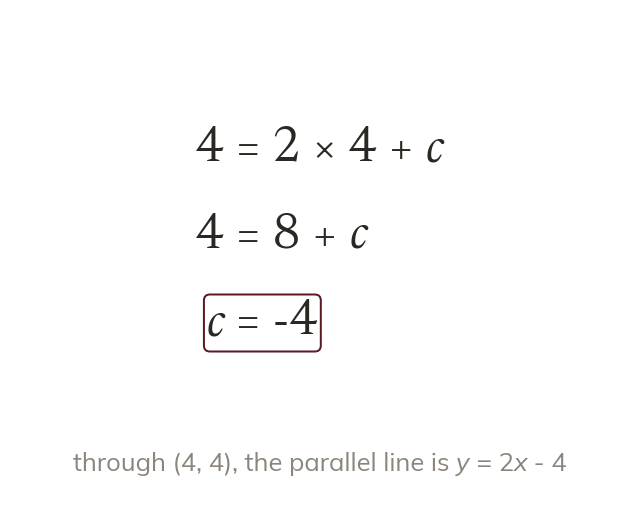

Parallel means the same gradient
Parallel lines rise by the same amount for every step across. So their gradients are equal.
Railway tracks, the lanes of a running track and the shelves of a bookcase never meet. On a graph, lines like these share one number: their gradient.
Work down the page at your own pace. Write every answer in your book first, then click to check it.
Read each card, then follow the worked examples one step at a time.

Parallel lines rise by the same amount for every step across. So their gradients are equal.

Lines with the same y-intercept but different gradients cross. They meet on the y-axis.

Only = mx + shows the gradient. So a line given as ax + by is rearranged first.
Pick an answer. If it's wrong, the feedback tells you which mistake it was.
Read each card, then follow the worked examples one step at a time.

A parallel line keeps the same gradient. Only its intercept changes, fixed by the point it passes through.

The point's coordinates satisfy = mx + So substituting them leaves an equation for
Pick an answer. If it's wrong, the feedback tells you which mistake it was.
Finished? Next lesson: 10H.13.5 Perpendicular Lines.
Log in, then search for a code to practise that skill.
Videos, worksheets and more on each part of this lesson.